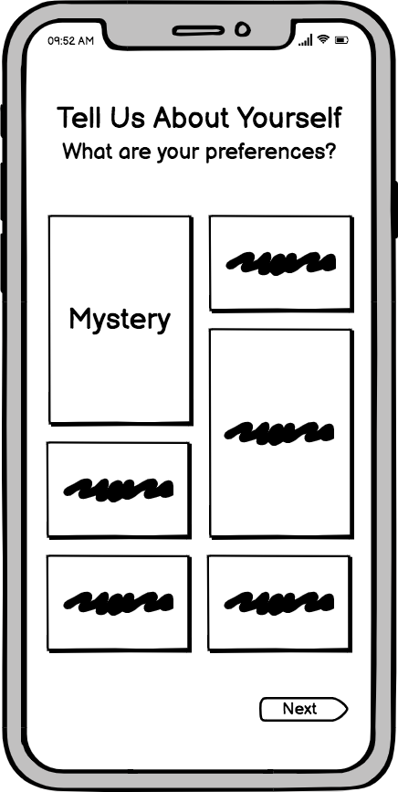

Select your preferences for genres. Anonymous data based on your selections will be sent to librarians.
Obtain a fun "personality breakdown" based on your responses.

View recommended events and media based on your preferences. Click on an event to view more info and add to your dashboard.
View upcoming events and media on your dashboard.
Get a notification to leave a review after attending an event / consuming media.
View your friends' activities... maybe you'll like something!
UI Design

Conclusions
This project challenged me to find an intersection between seemingly traditional institutions and modern social networking. Throughout the project, our mentors pushed us to find the "soul" in our project. Incorporating the personality quiz offered a more tailored and personal experience for users, which I feel elevated it beyond a social calendar app.
Thanks for reading! Please leave any feedback below :)
Comment Box is loading comments...